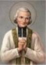
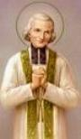
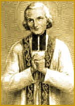
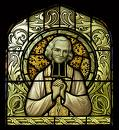
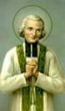
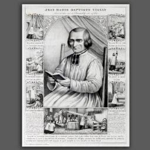
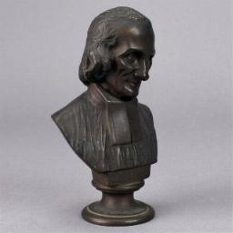

Em 11 de
Fevereiro de 1778, em Ecully, povoado distante uma légua (6 quilômetros) de
Dardilly, próximo a cidade 
Nosso Santo foi o quarto filho do senhor Mateus e Maria, e nasceu à zero hora do dia 8 de Maio de 1786, tendo sido batizado no mesmo dia, entre 9 horas e 10 horas da manhã. Foram padrinhos o tio paterno João Maria Vianney e sua esposa Francisca Martinon. O padrinho, sem mais delongas, no momento do batizado, deu de presente ao afilhado o seu próprio nome: João Maria Vianney.
Desde pequeno, recebeu o maior cuidado de sua mãe, porque revelou desde tenra idade, especial atenção e vontade em apreender o que a mãe lhe ensinava. Com quinze meses já sabia fazer o sinal da Cruz. Com 18 meses, quando a família se reunia a noite para fazer as suas orações, por iniciativa própria ajoelhava-se juntando as mãozinhas com devoção. E sempre, antes de dormir, a mãe lhe falava sobre o MENINO JESUS, a SANTÍSSIMA VIRGEM MARIA, sobre o Anjo da Guarda e aos poucos, lhe ensinava o PAI NOSSO, a AVE MARIA e noções sobre DEUS e a alma que dá vida ao corpo de cada um de nós.
O menino crescia em idade e em curiosidade, nas oportunidades, sempre propunha novas questões a sua mãe. O que mais lhe interessava saber eram os mistérios da infância de JESUS, o Natal, o presépio e os pastores. Para ouvir aquelas histórias, João Maria e sua irmã Catarina (a mais piedosa das irmãs), passavam horas e horas ao lado da mãe, acontecendo áàs vezes dos colóquios se prolongarem até a noite.
Mas ele tinha uma personalidade impetuosa e forte. Aquele rapaz de olhos azuis, cabelos escuro, tez morena, olhar vivo e que também revelava uma precoce piedade, não excluía de maneira alguma, o seu belo gênio. E por isso mesmo, mais tarde, para adquirir uma perfeita doçura, precisou exercitar longos e meritórios esforços, para dominar a sua própria vontade. Não obstante, ocorreram diversas passagens na infância e na juventude, que aquele menino tão sensível e nervoso, de modo admirável também soube se dominar!
Apesar da harmonia que existia na família, numa ocasião ele chegou a derramar lágrimas. Isto, porque possuía um lindo Rosário que estimava muito. Margarida, uma irmã 18 meses mais nova viu e o ambicionou. Então, logo aconteceu uma cena violenta entre ele e a irmã: gritos, empurrões e ameaças de pugilato. A mãe interferiu e ordenou: “Filho, dá o teu Rosário a Margarida”, disse ela com voz branda, mas firme, “dá-lhe de uma vez, por amor de DEUS”. João Maria soluçando, entregou o Rosário a sua irmã. Para uma criança de quatro anos, sem dúvida, foi um belo sacrifício. A fim de enxugar-lhe as lágrimas, a mãe, ao invés de acariciá-lo, deu-lhe de presente uma pequena imagem de madeira que representava a VIRGEM MARIA. Setenta anos mais tarde ele falava: “Que felicidade! Quanto eu amava aquela imagem! Não podia me separar dela, nem de dia e nem à noite... A VIRGEM SANTÍSSIMA é a minha mais antiga afeição; amei-a mesmo antes de conhecê-la”.
Algumas testemunhas dos anos de infância, particularmente a sua irmã Margarida, conta que ao primeiro toque do Ângelus, ele ajoelhava antes dos outros e às vezes, se retirava para um canto, colocava a sua querida imagem sobre uma cadeira e de joelhos rezava as suas orações. À imitação de sua mãe, onde estivesse: em casa, no jardim, na rua, João Maria “bendizia a hora”, isto é, à imitação da mãe, cada vez que soava uma nova hora, persignava-se respeitosamente e rezava uma AVE MARIA.
Enquanto naquela pequena aldeia desenrolavam-se tais cenas na família, vigorosos acontecimentos sacudiam a França: ocorreu o abominável saque em São Lázaro e a tomada da Bastilha (13 e 14 de Julho de 1789); foi assinado o Decreto espoliador dos bens do Clero (2 de Novembro); foi sancionada a Lei que suprimia os Votos Religiosos e fechava os Mosteiros (13 de Fevereiro de 1790); e ainda, a cruel e horrorosa Revolução Francesa criou a terrível Constituição Civil do Clero, que ameaçava os sacerdotes e os altares (em 26 /Novembro /1790).



Muitos anos mais tarde, quando o felicitavam por ter adquirido tão cedo o gosto pela oração e pelo altar, ele respondia com emoção e lágrimas: “Depois de DEUS, devo à minha mãe. Era tão boa. A virtude passa facilmente do coração da mãe para o coração do filho. Jamais um filho que teve a felicidade de possuir uma boa mãe poderia vê-la, ou pensar nela, sem chorar de agradecimento e saudade”.
UM PASTORZINHO DURANTE O TERROR
Em Janeiro de 1791, a Constituição Civil criada pela Revolução entrou em vigor. Todos os padres, bispos e religiosos em geral eram obrigados a aceitar os termos heréticos e prestar o juramento de obediência. Os padres que não prestassem o juramento cismático eram presos, encarcerados e podiam morrer na guilhotina. Muitos padres heroicamente recusaram tal juramento e se afastaram das Igrejas e Paróquias, passando a celebrar a Santa Missa, em locais ocultos, para não despertar a atenção das autoridades. Mas existia um grande perigo, porque quem os denunciasse, receberia do Governo cem libras de recompensa. E ao contrário, quem desse asilo, seria deportado.
Apesar dessas terríveis ameaças, os sacerdotes fiéis andavam escondidos pelos arredores de Lion e em Dardilly, e a casa dos Vianney ocultou a todos que chegavam, e inclusive, algumas vezes nela também celebravam a Santa Missa. João Maria estava com cinco anos de idade. Foi um milagre o seu pai, dono da casa, não ter caído na suspeita de alguns jacobinos, pagando com a cabeça a sua santa audácia.
Em 1793 o terror estava implantado em todos os cantos e em Lion o sangue corria de maneira cruel e impiedosa. Na Praça dos Terrores a guilhotina não descansava. As Igrejas foram fechadas e o barulho da guerra inquietava as famílias na cidade e no campo.
Completando sete anos de idade em 8 de Maio de 1793, já era um rapaz crescido e pronto para prestar algum serviço. Seus pais lhe confiaram à guarda do rebanho. Duas vezes ao dia levava do pasto para o estábulo e vice-versa, o burro, as vacas e as ovelhas. Conduzia pela mão a irmãzinha Margarida, pois os caminhos que davam para o vale eram tortuosos e semeados de seixos. Ao chegar ao campo, ambos se ajoelhavam conforme a recomendação materna, a fim de oferecer a DEUS os seus trabalhos de pequenos pastores. Depois vigiavam o gado, cuidando bem que as vacas não causassem dano às plantações do vizinho.
E estando no campo, deixava a sua irmãzinha tecendo meias com lã e ele se afastava um pouco, até próximo a um pequeno riacho, onde erguia com pedras, um altar à VIRGEM MARIA e colocava a sua imagem de madeira. Diante dela, ajoelhado, rezava as suas orações.
A ESCOLA, PRIMEIRA CONFISSÃO E COMUNHÃO
A julgar por
diversos acontecimentos de sua infância, João Maria chegou ao uso da razão muito
cedo. Apesar 
Até o fim do ano 1794, os padres católicos que permaneceram na comarca de Lion não chegavam a trinta. Embora poucos, apesar da pena de morte imposta pelos revolucionários, utilizando de disfarces eles asseguravam a continuidade do serviço religioso. Em toda região ao redor de Dardilly, apenas dois padres davam assistência: Padre Groboz e Padre Balley, que se vestiam modestamente e se caracterizavam como Cozinheiro e Marceneiro, respectivamente.
Num dia de 1797, o Padre Groboz visitou a casa dos Vianney, abençoou as crianças e perguntou a João Maria que estava com 11 anos: “Desde quando não te confessas”? Ele respondeu: “Eu nunca me confessei”. O Padre então falou: “Pois façamo-lo agora mesmo”. E desse modo, aconteceu à primeira confissão de João Maria.
O Padre Groboz percebeu a piedade no coração daquele menino e por isso, argumentou que era necessário ao bem dele, uma instrução religiosa mais completa. Sugeriu duas irmãs religiosas catequistas em Ecully. João Maria poderia ficar alguns meses na casa de Margarida Beluse, irmã de sua mãe, casada com Francisco Humbert. O assunto foi devidamente articulado e o rapaz seguiu para Ecully.
João Maria foi instruído pelas religiosas, junto com outras quinze crianças. Repletos de alegria aguardavam a celebração da Santa Missa quando receberiam a Primeira Comunhão. Nesta época estava com 13 anos de idade. Ocultamente, para não atrair a atenção dos jacobinos e seus comparsas, foi preparado o local da cerimônia e foi realizada uma linda e silenciosa celebração. João Maria recebeu a Eucaristia com o coração cheio de fé, de desejo e imenso amor ao SENHOR. Disse Margarida, sua irmã: “Eu estava presente e afirmo que meu irmão estava tão contente que não queria mais sair do lugar onde teve a felicidade de comungar JESUS pela primeira vez”.
No mesmo dia voltou com os pais para Dardilly. Sendo já um rapaz com 13 anos de idade, já tinha passado o tempo da infância e dos estudos. O trabalho na granja e no campo reclamava a sua presença e necessária ajuda. E ele dedicadamente acolheu a missão, assumindo o trabalho com muito amor e de modo notável exercitou as suas virtudes, cumprindo as tarefas e ganhando a amizade e o coração de todos.
TRABALHOS NO CAMPO E SUA VOCAÇÃO
Objetivando acelerar a produção no campo, emparelhou-se durante oito dias com o seu irmão Francisco, mais velho dois anos, empenhando-se ao máximo no cultivo do solo, arrancando a erva daninha e no trabalho da vinha. Regressou extenuado, mas alegre e feliz, dizendo: “DEUS seja Bendito! Coragem, minha alma! O tempo passa! A eternidade se aproxima. Vivamos tal como devemos morrer. Bendita seja a Imaculada Conceição de Maria, MÃE DE DEUS”.


Com inteligente golpe político, o General Bonaparte torna-se primeiro Cônsul da Republica e decide organizar a França, dando-lhe a paz interna. Compreendeu que sem religião não faria nada de sério e nem duradouro. Acabou com a perseguição religiosa e realizou negociações com o Papa para um acordo que foi assinado em Paris no dia 16 de Julho de 1801, transformado em Lei, no dia 5 de Abril de 1802.
Os sacerdotes que já vinham se aproveitando da tolerância do primeiro Cônsul, regressaram do exílio, abriram-se as Igrejas e as Ordens religiosas se restabeleceram publicamente, fazendo com que a alegria envolvesse todos os corações cristãos.
Dessa época em diante, sempre que possível, antes de ir para o trabalho, o jovem João Maria Vianney passava pela Igreja a fim de buscar forças com JESUS Sacramentado, para enfrentar a labuta e os acontecimentos de cada dia. Na verdade, ele queria ser sacerdote, e esse desejo tão íntimo era que fazia dele uma pessoa tão piedosa e boa. Mas como conseguir? Já estava com 17 anos e só tinha os estudos primários! Era necessário o estudo do latim. Por isso, decidiu confidenciar o seu desejo a sua mãe e em seguida, confidenciou também a sua tia Margarida Humbert. Dizia ele: “Se eu fosse sacerdote desejaria ganhar para CRISTO muitas almas”.
Seu pai repleto de compromissos não acolheu o pedido do filho. Como pagar os estudos de João Maria, logo agora com o dote do Casamento de Catarina (ela já estava com o Casamento marcado), as despesas com o Francisco no serviço militar, os custos da produção e os necessários investimentos na propriedade rural"

João Maria partiu para Ecully. Lá chegando, o austero Padre Balley, homem sofrido e experiente da vida, fixou os seus olhos perscrutadores naquele moço de 19 anos, magro, recolhido e discreto e fez-lhe algumas perguntas, podendo perceber que ele tinha uma agradável instrução religiosa. Agradou-lhe também o sorriso franco e confiante do candidato ao sacerdócio. Abraçando-o com afetuosa afabilidade e aceitando-o no Seminário, disse: “Fica tranquilo, meu amigo, eu me sacrificarei por ti, se for preciso”.
E assim o nosso Santo com 20 anos de idade, foi em busca de concretizar a sua vocação. Sempre amável e cândido, traçou, todavia, um plano de penitência e se impusera segui-lo integralmente, porque desejava mortificar-se ainda mais, para atrair as bênçãos do Céu sobre os seus estudos. Em cada refeição se contentava com a sopa, embora sua tia insistisse para que ele se alimentasse corretamente.
Os estudos de seminarista tinham começado. Pela manhã e a tarde passava no presbitério de Ecully. Mas a gramática latina lhe pareceu horrível, não conseguia gravar as declinações de maneira nenhuma. Esquecera as poucas noções gramaticais recebidas na escola do senhor Dumas. E não era possível aprender a sintaxe latina sem conhecer a francesa. Os progressos de João Maria nos primeiros meses de estudo foram quase nulos. Não obstante estudava com uma tenacidade admirável. Em face de tanta dificuldade para aprender, apoderou-se dele um grande desânimo de lutar por sua vocação. A tentação desencadeou forte como uma tormenta sobre sua alma desolada. “Vou voltar para casa”, disse ele ao Padre Balley. O Padre que já era conhecedor de suas notáveis virtudes lhe deu preciosos conselhos e lhe estimulou a não abandonar o campo de batalha e continuar firme lutando pelo seu ideal. João Maria aceitou aquela paternal palavra, mas nem por isso a memória do estudante tornou-se menos rebelde. Como ele mesmo dizia: “não conseguia reter nada na minha ingrata cabeça”.
Para conseguir a ajuda do Céu, fez um esforço supremo: prometeu peregrinar a pé, mendigando o pão de cada dia, tanto na ida como na volta, até o Santuário de Louvesc. No verão de 1806 ele caminhou os quase 100 quilômetros de distância, subindo cerca de 1.100 metros de altura, a fim de visitar o túmulo de São Francisco Regis, apóstolo de Velay e Vivarais. A fome e a sede apertaram ao longo do trajeto. Aproximava-se de uma porta para pedir auxílio, gritavam lá de dentro: “Que quer esse vagabundo com ares de santinho”? Assim, o jovem viajante foi tratado de meliante e enxotado de todas as portas. Continuou o seu caminho comendo ervas e bebendo água das fontes. Mas o cansaço era muitão grande e a fome insuperável.
Felizmente encontrou mais adiante corações menos duros. Alguns pedaços de pão, recebidos de esmola, permitiram-lhe chegar ao célebre Santuário. Estava extenuado, mas feliz. João Maria ajoelhou-se diante do sepulcro do Santo e lhe expôs o motivo de sua viagem, pedindo-lhe a intercessão junto a DEUS para “lhe alcançar a graça de aprender o latim necessário para cursar a teologia”.
Esta graça absolutamente indispensável para conseguir o fim almejado foi-lhe concedida com muita parcimônia. DEUS que tem os seus desígnios, ao colocar à prova a fé de seu servo, com certeza, quis aguerri-la para combates mais rijos e difíceis.
Confessando em Louvesc, narrou ao Padre Jesuíta que tinha feito promessa a DEUS de mendigar e que a viagem ficou muito perigosa. O Padre confessor sem hesitar, “comutou-lhe o voto, de modo que, regressando a Ecully, ele devia dar esmola em vez de pedir”. Como tinha levado dinheiro, voltou a pé, mas do próprio bolso pagou todos os gastos com comida e hospedagem e ainda deu esmolas aos pobres.
Retornando a Ecully, o Padre Balley o recebeu de braços abertos e por certo, daquele dia em diante, o moço fez bastante progresso para não mais desanimar.
Durante a quaresma de 1807, quando ia completar 21 anos de idade, recebeu na mesma Igreja de Dardilly o Sacramento da Confirmação ministrado pelo Cardeal Fesch.
E a partir de então, muito trabalho. Durante dois anos João Maria seguiu normalmente os seus estudos com grande paz em sua alma. Porém, não tardou um trovão surdo, ribombar com muito barulho, naquele céu tranquilo. Estava no Outono de 1809. Um agente do marechalato de Lion levou à casa de Dardilly uma “convocação militar” com o nome de João Maria Vianney. Ele teria que se apresentar ao serviço militar.
OS DESERTORES DE NOES
O Pároco de Ecully havia conseguido a inscrição do seu discípulo entre os isentos do serviço militar. Mas a Lei dispensava somente os clérigos que receberam as ordens maiores. A isenção não existia para os simples seminaristas, a não ser por uma graça ou um favor temporário do Imperador. Entretanto na Diocese de Lion, existia o privilégio que isentava os estudantes eclesiásticos e ele estava em vigor. Por uma exceção inesperada, somente João Maria e outros três seminaristas foram chamados ao exército. Resultaram infrutíferas todas as tentativas que foram feitas para a liberação de nosso Santo. Ele teve que se resignar e obedecer.
Todavia, os
caminhos de DEUS não são iguais aos caminhos da humanidade. Ele se apresentou a
guarnição, mas 
De repente apareceu um desconhecido que perguntou: “Que fazes aqui? Vem comigo”. Agarrou a minha sacola que era muito pesada e mandou que o seguisse. Ele naturalmente pensou que eu era um desertor. Mas naquele momento, eu não tinha condições para explicar nada, precisava descansar cuidar da minha febre e me alimentar, estava quase desmaiando de fraqueza.
Comentou o Conde Garets: “Se o Capitão Blanchard, Comandante do recrutamento militar não o tivesse deixado partir sozinho, ele que esteve hospitalizado e ainda estava convalescente, e lhe tivesse facilitado alcançar a retaguarda militar, com certeza João Maria permaneceria na unidade militar. O seu caráter perseverante e sincero não iria afastá-lo do caminho do direito. Ele foi levado, por circunstâncias extremas, sem premeditação alguma de sua parte, ao estado de deserção”.
Aquele desconhecido chamava-se Guy, e era morador nas montanhas, e ele conduziu João Maria às montanhas de Forez onde pode descansar e se alimentar na residência do senhor Augustin. Naquela região pobre todos tinham que trabalhar para ganhar o pão. Assim no dia seguinte Guy conduziu o companheiro à casinha de Cláudio Tornaire, que o empregou por dois dias. Terminado o trabalho, João Maria saiu à procura de outro emprego. Não encontrou depois de ir a diversas propriedades. As coisas se complicavam. O conscrito Vianney, perdido e abandonado naquelas montanhas, tornou-se, sem querer, um desertor.
Nosso Santo apresentou-se ao burgomestre da comuna, senhor Paulo Fayot, que não tendo nada para ele, indicou a casa de sua irmã Claudina Fayot, que era viúva e vivia com seus 4 filhos.
João Maria foi bem recebido e em poucos dias construiu amizade com todos. A senhora Claudina possuía um coração caridoso e trabalhava ativamente em sua vivenda. Decidiu acomodá-lo num canto do estábulo, perto de uma janela, onde havia um deposito de feno, e também mudaram o seu nome para: Jerônimo Vicente, com receio da constante busca de desertores feita pela policia. E assim vivendo cautelosamente e procurando ser útil e agradável a todos, atravessou aquele período sombrio, recheado de peripécias e longe de sua vocação.
O tempo passou ligeiro, muitos fatos aconteceram desde Janeiro de 1810. Em fins de Outubro chegou uma notícia auspiciosa. O aluno seminarista do Padre Balley não seria mais perseguido. Estava livre. Napoleão vencedor da Áustria concedera anistia geral, para celebrar suas núpcias com a arquiduquesa Maria Luisa no dia 12 de Abril de 1810. Assim sendo, João Maria ficou livre de toda condenação, em face daquele ato de clemência e ao mesmo tempo poderia se livrar de toda obrigação militar, caso arranjasse um substituto para a sua vaga. Voltou para casa. De comum acordo com o pai e o seu irmão mais novo, Francisco Vianney, apelidado “Cadete”, conseguiu montar o esquema. O irmão aceitou e foi substituí-lo no Serviço Militar. Feita a transferência no Setor Militar de Recrutamento, Francisco foi incorporado ao 6º Regimento de Linha e partiu para Phalsbourg, enquanto João Maria ficou totalmente livre.
Algumas semanas após sua volta à casa paterna João Maria teve uma grande tristeza, no dia 8 de Fevereiro de 1811, sua santa mãe morreu com 58 anos de idade. Ele jamais a esqueceu, e sempre que se lembrava dela, ficava comovido e chorava.
O CURSO DE FILOSOFIA
O Padre Balley se alegrou com o retorno do João Maria, depois de uma ausência de um ano, a fim de continuar os estudos. Para que tivesse mais tempo com ele, desta vez o hospedou na Casa Paroquial. João Maria estava para completar 25 anos de idade e o tempo urgia. Equiparou-o aos estudantes de retórica do Seminário Menor, e a partir de 28 de Maio de 1811 ele foi iniciado no clericato, que pertencia ao foro da Igreja. Já era um passo para o sacerdócio. Com muito esforço e perseverança o nosso Santo seguia avançando nos estudos. No último semestre de 1812, pelo aproveitamento demonstrado, o Padre Balley decidiu que era chegado o momento de seu discípulo de 25 anos seguir o plano de estudo regulamentar. Exigia-se dos aspirantes ao sacerdócio, um ano de filosofia e dois de teologia.
João Maria Vianney foi mandado para o Seminário de Verrières, perto de Montbrison, com mais duzentos companheiros que tinham terminado o curso clássico. Ali, apesar de sua pequena bagagem literária, teria que cursar mais de um ano de filosofia, antes de ingressar no Seminário Maior de Santo Irineu. E sempre capengando nos estudos, não desanimava, se esforçava muito mais e sempre rezava, suplicando a ajuda Divina.
Apesar de Verrières conservar os costumes dos tempos heróicos, o regime era duro, a comida frugal e o regulamento muito severo.
João Maria longe de se queixar, mostrava-se sempre contente e nunca faltou aos seus deveres. Contudo seu comportamento não chamou a atenção dos outros, por culpa do insucesso nos estudos. Suas notas finais foram: Trabalho = bom; Ciência = muito fraca; Comportamento = bom; Caráter = bom. Como se vê ele não foi muito feliz em Verrières. Terminado o Curso, retornou a Ecully.
NO SEMINÁRIO DE LION

Na verdade, João Maria que chegou no princípio de Outubro de 1813 cheio de entusiasmo ao Seminário Maior de Santo Irineu, lá somente permaneceu por alguns meses. Apesar do seu grande recolhimento, a modéstia, abnegação de si mesmo, a penitência levada até a maceração, e o seu imenso esforço pessoal para aprender, que refletia em todo o seu exterior, não alcançara o que desejava. O resultado nos estudos foi nulo, pois muito pouco entendia do latim. E com isto, ele sofria terrivelmente ao ver a ineficácia de seus esforços! Ninguém como ele almejava tanto o sacerdócio! Mas, depois de cinco a seis meses, os professores julgando-o incapaz de ir mais adiante com os estudos, aconselharam-no que se retirasse.
Novamente o Padre Balley o recebeu de braços abertos, enquanto ele chorava amargamente e lhe confidenciava as suas angústias. O Padre tomando a palavra, assegurou ao seu protegido que DEUS o escolhera para o serviço do altar e que portanto, ele devia ter paciência, permanecendo com o mesmo ardor e empenho. Era forçoso tentar mais uma vez.
Mestre e discípulo depois de rezarem, puseram mãos à obra. Alternativamente o Padre Balley ia lhe ensinando as lições, lançando mão do francês e do latim, para que ele pudesse compreender tudo corretamente e pudesse gravar o latim com convicção. E assim seguiram durante perseverantes meses.
Aproximava-se o tempo das Ordenações. O exame canônico começava em fins de maio de 1814, e o Padre Balley aventurou apresentar o seu discípulo, agora com 29 anos, considerando que a Diocese estava com falta de sacerdotes.
No dia do exame, ele re-encontrou diversos companheiros que estudaram no Santo Irineu e sentiu alegria no encontro. Sentou-se na última cadeira procurando se tranquilizar, pois estava nervoso e impaciente. No momento em que foi chamado, perdeu a calma, entendendo mal as perguntas em latim, embaraçou-se e respondia de maneira incompleta. O tribunal examinador ficou perplexo. Todos conheciam o Padre Balley e não ignorava os estudos que ele passou ao seu discípulo, o que fazer? Haveriam de recusar aquele seminarista de tão boa vontade? Ele voltou triste e sem solução para Ecully. O Padre Balley que conhecia todos os examinadores percebeu o perigo do desfecho e por isso, decidiu viajar a Lion. Conseguiu que eles, os Mestres Examinadores viessem a Ecully e se encontrassem com João Maria. Em atenção à grande amizade que tinham com o Padre Balley, vieram e examinaram o Santo novamente. Ficaram impressionados, ele com grande tranquilidade respondeu todas as perguntas corretamente. Mas agora não cabia a eles a palavra final, que seria dada pelo Vigário Geral. E o Vigário Geral, já tinha sido informado que o discípulo do Padre Balley só entendia bem a língua materna, não havendo esperança de melhorar o seu latim.
O Vigário Geral Padre Courbon, simples e bondoso, o recebeu e limitou-se a lhe perguntar: “Você sabe rezar o Rosário”?
- Sim, senhor. É um excelente modelo de piedade.
- Um modelo de piedade? – Pois bem, eu o admito. A graça de DEUS fará o resto.
Hoje, todos nós percebemos: jamais o Padre Courbon foi tão inspirado com sua decisão.
DO SUBDIACONATO AO SACERDÓCIO
O jovem
Vianney recebeu a notícia, com reconhecimento infinito, que no dia 2 de Julho,
festa da Visitação de 
João Maria voltou ao Seminário um mês antes da Ordenação, a fim de se preparar com exercícios espirituais e ouvir as instruções sobre a cerimônia, e sobre os poderes que lhe iam ser conferidos.
Em fins de Maio foi admitido ao Diaconato e entrou novamente no Seminário. No dia 23 de Junho, véspera da festa de seu santo protetor (João Batista), foi ordenado Diácono na Igreja primacial de São João de Lion, por Monsenhor Simon, Bispo de Grenoble. Por um especial favor, sem dúvida, em consequência das diligências de seu abnegado mestre Padre Balley, junto com a fama de suas preciosas virtudes, logo após o diaconato foi admitido à Ordenação Sacerdotal. Pela segunda vez foi submetido ao exame canônico em Ecully, em presença do Vigário Geral Padre Bochard. Verificou este com grande satisfação que, depois de transcorrido um ano de intenso estudo, o nosso “Teólogo tinha feito verdadeiros progressos”.
Ficou decidido que o nosso Diácono, depois de alguns dias de retiro, iria a Grenoble receber o presbiterato (sacerdócio). Dia 12 de Agosto de 1815 foi recebido à tarde, no Seminário Maior de Grenoble, e no dia seguinte Monsenhor Simon, o Bispo Diocesano foi se encontrar com João Maria, enquanto uma autoridade presente lamentava que ele se tivesse incomodado com tão pouca coisa: fazer uma única ordenação. O velho Bispo, um prelado profundamente piedoso e cheio de afeto, contemplou por um momento aquele Diácono de aspecto ascético, a quem não acompanhava nenhum parente, nem um só amigo, e respondeu a aquela observação com um grave sorriso: “Não é nenhum incomodo ordenar um bom Sacerdote”.
Aquele 13 de Agosto ficou indelevelmente gravado no coração do Padre Vianney! Mais tarde, em suas catequeses, costumava a falar sobre a sublimidade do sacerdócio: “Ó, o Padre tem alguma coisa de grande! Não se compreenderá bem o sacerdócio senão no Céu. Se o compreendêssemos na Terra, morreríamos não de espanto, mas de amor”!
Com a idade de 29 anos, depois de tantas incertezas, de tantas dificuldades e tantas lágrimas, João Maria Vianney via aberta as portas do Santuário. Enfim subia ao Altar do SENHOR. Desde aquele momento, se considerava de corpo e alma, um vaso sagrado, destinado exclusivamente ao Divino Mistério. Como tinha por especial protetor São João Batista, juntou BATISTA ao seu nome: João Maria Batista Vianney.
COADJUTOR DE ECULLY
O padre Vianney celebrou a sua primeira Santa Missa na Capela do Seminário Maior, onde no dia anterior recebera a ordenação sacerdotal. Regressou a Ecully no dia 16 de Agosto, depois de ter celebrado a sua terceira Santa Missa. Em Ecully, o seu velho mestre, o esperava ansiosamente. O Padre Balley depois de ter ajoelhado a seus pés e recebido a sua benção, comunicou-lhe a alegre noticia: os Reverendíssimos Vigários Gerais concederam um coadjutor à Paróquia de Ecully, e o sacerdote designado para tal cargo foi justamente o Padre João Maria Batista Vianney. Assim, o “filho adotivo ficaria junto ao pai”.
Os paroquianos de Ecully participaram da alegria de seu Pastor: “O Padre Vianney muito nos edificou quando permaneceu estudando entre nós, quanto mais agora que ele é sacerdote”! Desde que tornou público a sua “aprovação” pela Cúria Arquiepiscopal, o seu confessionário era assediado pelos enfermos espirituais, que não procuravam outro sacerdote. E fato admirável, um grande número de pessoas mudaram de vida, depois de se terem dirigido ao Padre Vianney.
Preparava cuidadosamente as lições de Catecismo e as ministrava com dedicação. Aos alunos mais atrasados ensinava particularmente, para que eles no aprendizado, não ficassem distantes de seus colegas. No púlpito era breve e claro. Sua irmã Margarida que vinha de Dardilly para ouvi-lo, dizia: “A meu ver, ele não pregava bem”... Mas quando era a vez dele falar, todos acorriam a Igreja para ouvi-lo. Não receava dizer as verdades mais duras e fustigar certos vícios. Pregava a pureza dos costumes e a perfeição da vida cristã. Aquele Padre de 30 anos de idade já se conduzia a si mesmo com admirável reserva. Era muito simples e franco, e também “evitava toda familiaridade”.
Estando o Padre Vianney junto ao Padre Balley, foi criada uma excelente oportunidade do Pároco de Ecully continuar ajudando ao nosso Santo a prosseguir firme nos estudos de Teologia. Nos momentos livres era aberto novamente o “Ritual de Toulon” e o mestre lhe explicava, de uma maneira prática, o dogma, a moral e a liturgia Católica.
DEUS, porém, não colocara o Padre Vianney em Ecully somente para exercer o ministério paroquial, o mandara para uma “escola de santidade”. O Padre Balley era um sacerdote que praticava intensa mortificação. Entre ele e o Coadjutor estabeleceu-se logo um sentimento que estimulou a mútua austeridade. No dizer do Cônego Pelletier, cura de Treffort: “Era um Santo junto a outro Santo”! O Padre Balley usava um cilício. O Padre Vianney pediu reservadamente a senhora Claudina Bibost que lhe fizesse “um colete de crinas com o qual cobriria as carnes”! Ambos também jejuavam com frequência.
O Padre Balley não era velho, não passava dos 65 anos de idade, mas vivera proscrito na época do Terror de Robespierre, escondido e peregrinando de um local para outro. Assim, envelhecido antes do tempo, contraiu em fevereiro de 1817 uma úlcera na perna que nunca foi curada. Ele sofria sem se queixar. A ferida provocou a decomposição lenta do sangue, veio à gangrena e os médicos o consideraram desenganado. A 17 de Dezembro, depois de ter confessado com o seu “filho Vianney” e recebido o Santo Viático e a Extrema Unção, adormeceu no SENHOR o venerado Pároco de Ecully.
O Padre Vianney chorou-o como a um pai. Devia-lhe tudo! Conservou imperecível por toda a sua vida, a lembrança daquele Santo no seu coração.
Pouco depois da morte do Padre Balley, os paroquianos de Ecully apresentaram à Cúria em Lion um pedido para o Padre Vianney ser o Pároco. Mas eles consideram melhor enviar um sacerdote mais experimentado. Enviaram o Padre Tripier, e o Padre Vianney continuou como Coadjutor.
O Padre Tripier não se achou obrigado, por sua consciência, a seguir a mesma orientação do Padre anterior. Quis imprimir a sua maneira de administrar. Da nova orientação, nasceram divergências de pensamentos e de procedimentos, em relação ao Coadjutor e sendo ele muito humilde, aconteceu o natural retraimento de João Maria. Acredita-se que o Padre Tripier, por este motivo, pediu outro Coadjutor à Cúria. E como em 21 de Janeiro de 1818 ficou vacante a pequena Capelania de Ars, os Vigários Gerais decidiram enviar para lá o Coadjutor de Ecully, e no princípio de Fevereiro comunicaram ao Padre Vianney, que a Capela e a aldeia de Ars estavam confiadas ao seu zelo.
Atendendo ao chamado, o Padre Vianney foi a Lion se encontrar com Monsenhor Courbon na Cúria. Ele lhe disse: “Não há muito amor a DEUS naquela Paróquia. Vossa Reverendíssima procurará introduzi-LO”. O Padre Vianney assegurou que não desejava outra coisa. Monsenhor Courbon lhe explicou que aquela aldeia era uma das mais humildes da França, os recursos eram poucos e os próprios emolumentos de um coadjutor não passavam de 500 francos, dinheiro dado pela Prefeitura do Município. Entretanto, continuava o Monsenhor, Ars tinha a vantagem de possuir um castelo “onde morava uma digna senhora”, que haveria de ajudar o Pároco com seu dinheiro e sua influência.
Padre João Maria Vianney com 33 anos de idade, no dia 3 de Fevereiro de 1818, escreveu em Ecully o último ato de seu ministério. No dia 9, pela manhã, pôs-se a caminho de Ars.